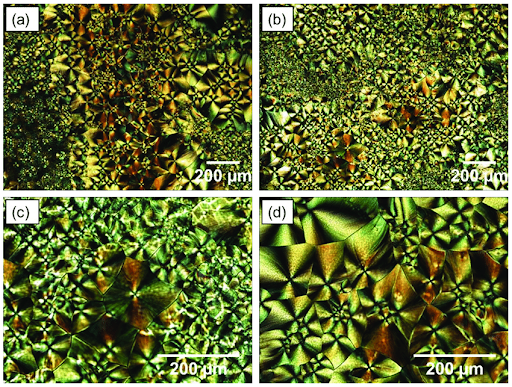
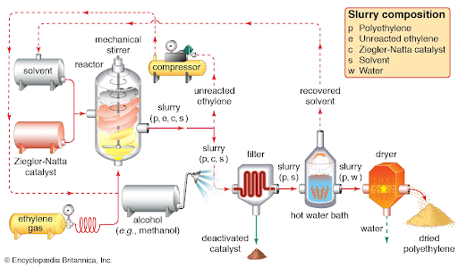

Ultra High Molecular Weight Polyethylene Material Report
By Cole Rutkowski
Introduction:
Stronger, lighter, and cheaper are recurring themes when searching for a material to use in applications from biomedical to construction. In both of these industries, Ultra High Molecular Weight Polyethylene (UHMWPE) has found its place across industries. Heralded for lubricity, abrasion resistance, impact resistance, and strength-to-weight ratio, UHMWPE has found itself in a variety of products. These products include, but are not limited to: sails, tents, backpacks, webbing, body armor, armored vehicles, hip and knee replacements, truck lining, textiles, and cutting boards.
UHMWPE in Climbing Equipment
Dyneema is the gold standard in the climbing world for strong and lightweight slings. Dyneema Composite Fabric (also known as Cuben Fiber) is manufactured in combination with polyester to produce a strong fabric that is abrasion, UV, and chemically resistant. HyperLite Mountain Gear reports that, “Dyneema® Composite Fabrics are high-performance, non-woven, rip-stop, composite laminates. Dyneema® fiber is laid out in opposing grid orientations, sandwiched between thin outer layers of polyester film, and melded together in a high-pressure autoclave. This process results in a highly durable material that is light enough to float on water.”1 Edelrid, a retail company for climbing products, reports that their 8mm Dyneema sling, weighing in at 19 grams, has a minimum breaking strength (MBS) of 22 Kn!2 To report these numbers, Edelrid has done extensive testing to earn the EN 566 certification, indicating the trusted standard in their product.3
Image 1: Dyneema Climbing Sling4

Image 2: UHMWPE Reinforced Helmet5
Image 3: EN 566 Certification details
Material Structure:
UHMWPE is a linear, synthetic thermoplastic, meaning it is a synthesized plastic that hardens at low temperatures but becomes moldable above certain temperatures. Ethylene (C2H4) is a gas with molecular weight 28 that forms the polymer polyethylene. The basic chemical formula for polyethylene is (C2H4)n, where n is the degree of polymerization.6 UHMWPE can consist of up to 200,000 repeat units of polyethylene. The molecular weight of UHMWPE is difficult to measure by traditional means, and thus it is inferred through its intrinsic viscosity to be between 2 and 6 million grams per mole. Its density is approximately 1 gram per cubic centimeter and its unit cell dimensions are a = 0.74 nm, b = 0.493, nm and c = 0.253 nm.7 It is often copolymerized with monomers like polypropylene and can consist of up to 50% copolymers while still being considered UHMWPE (under certain industrial standards). The addition of polymers alters the mechanical and physical properties of UHMWPE, however only the monomer ethylene will be considered, as in industries such as the medical field the production of UHMWPE are homopolymers. The configuration of UHMWPE is described as “a two phase composite of crystalline and amorphous phases. The crystalline phase contains chains folded into highly oriented lamellae, with the crystals being orthorhombic in structure. The lamellae are 10-50 nm thick and 10-50 μm long. The lamellae are oriented randomly within the amorphous phase with tie molecules linking individual lamellae to one another.8 Below are images of UHWMPE under a microscope and its phase diagrams.
Image 4: Light Microscopy of UHMWPE9
Image 5: Phase Diagram10
Carbon:
Electron Configuration: 1s2 2s2 2p2
6 Protons, 6 Neutrons, 6 Electrons
Atomic Radius: .0914nm
Isotopes: Carbon-13,Carbon-1411
Hydrogen:
Electron Configuration: 1s1
1 Protons, 1 Neutrons, 0 Electrons
Atomic Radius: 53pm
Isotopes: Tritium, Deuterium, Protium12
Material Properties:
Below are charts of the material properties of UHMWPE. In regard to climbing slings, the tensile strength and specific gravity allow for slings to be lightweight while still incredibly strong. One property to note is the melting temperature, which is relatively low. This is important because under cyclic or continuous friction, such as rubbing against a rope or rock, can lead to the sling melting and ultimately failing.
Image 6: Material Properties of UHMWPE13

Image 7: Thermal Properties14
Image 8: Tensile stress-strain curves of (a) Neat UHMWPE (b) UHMWPE-MWCNT15
Processing and Production
The production of UHMWPE is a process that involves several steps to achieve a material in a usable form. Typically, ethylene must first be synthesized and then polymerized in polyethylene. Special processes are then used to achieve long chains of polyethylene that form UHMWPE. After its initial synthesis, UHMWPE is extruded or injected to form a desired shape, such as sheets, tubes, and rods. The first step would be the synthesis of ethylene, which, according to the University of South Carolina, “The conventional method of producing ethylene is steam cracking of ethane in a chemical plant by using extreme temperatures and pressures. This requires a large energy input and releases substantial amounts of carbon dioxide, a greenhouse gas.”16 The next step is to polymerize the ethylene gas in a process known as Ziegler-Natta polymerisation. “In Ziegler-Natta polymerisation, monomers are treated with a catalyst, such as a mixture of titanium chloride (or related compounds, like oxovanadium chloride) with triethylaluminum (or trimethylaluminum). Other components are often added, such as magnesium chloride, to modify the catalyst and improve performance.”17 Finally, the polyethylene is molded into its desired shapes by melting for ram extrusion, injection molding, and compression molding. “In [ram extrusion], the molten UHMWPE is forced through a die using a ram or piston. Ram extrusion allows for the production of continuous profiles, such as rods, tubes, and sheets, with precise dimensions and excellent surface finish. Compression molding is another commonly used technique for UHMWPE. In this process, the molten UHMWPE is placed into a mold cavity, and pressure is applied to shape it into the desired form. Compression molding is suitable for producing intricate parts and components with varying thicknesses. In [injection molding], the molten UHMWPE is injected into a mold cavity under high pressure. It allows for the production of complex shapes, intricate details, and large quantities of UHMWPE parts with excellent dimensional accuracy.”18
Image 9: Ziegler-Natta Polymerization19
Image 10: UHMWPE Production process20
Image 11: Extrusion process21
Defects and Durability:
Possible defects in UHMWPE include void formation, creep, inclusions, and chain entanglement. Voids can form from air accumulation within the material during improper manufacturing processes, which reduces density and strength. Creep deformation can occur when the continuous load is applied to UHMWPE, especially when the material is at an elevated temperature. Inclusions in the material structure during production lead to a non-homogenous structure that creates a point of concentration for loads. Inclusions can reduce the strength of the material and lead to failure at lower values than expected. Sufficient entanglement must also be achieved in the polymer structure to maintain its mechanical properties. ScienceDirect says, “The degree of entanglement of the UHMWPE resins and products significantly affects the wear resistance and solubility of the products during processing. The less entangled the resin product, the more likely it is to dissolve evenly during production, resulting in fewer defects and better mechanical properties.”22
Image 12: Defects in UHMWPE23
Measurements and Analysis:
UHMWPE undergoes several extensive testing procedures to validate the physical properties of the material. The National Center for Biotechnology Information provides detailed information on some of the processes and properties that are used and measured.24 Some key tests that are performed are tensile, hardness, impact, chemical resistance, UV resistance, and creep testing. Universal testing machines are used to test for several load-related properties, while a Charpy impact test is used to test hardness. Chemical resistance is tested with a large selection of chemical substances from acetaldehyde to zinc sulfate, and the effects and deformations are measured to determine acceptability ratings under each chemical.
Image 13: Northern Plastic rating system25

Image 14: Partial List of Substances Tested on UHMWPE by Northern Plastic
Health and Safety:
UHMWPE is colorless, odorless, and non-toxic and is regarded as safe for use in most applications. It is non-carcinogenic and there are no known symptoms to exposure. A&C Plastics Inc. recommends that you seek medical attention if exposed and prolonged irritation occurs and “if thermal decomposition occurs, upper respiratory, eye, nose, and throat irritation may result.”26 When working with UHMWPE, personal protective equipment is highly recommended, which includes eye protection, gloves when working with heated material, and adequate ventilation; respiratory protection is not normally required. Overall, UHMWPE is relatively safe to humans and poses little risk to health and safety.
Environmental Sustainability
The environmental sustainability of UHMWPE is a complex issue that is difficult to measure and does not have a clear cut answer. Plastics justifiably face scrutiny over their environmental safety factors, however the use of UHMWPE in place of shorter-lasting plastics can be seen as a net improvement on the environment. UHMWPE is non-biodegradable, and thus single and short-term use products containing the material can be harmful to the environment. Fortunately, UHMWPE is reported to be unlikely to accumulate in biological organisms and is recyclable. Polimaxx says of the disposal methods, “This material may be recycled if unused, or if it has not been contaminated so as to make it unsuitable for its intended use. Shelf life considerations should also be applied in making decisions of this type. Note that properties of a material may change in use, and recycling or reuse may not always be appropriate. Dispose of by: burial in a land-fill specifically licenced to accept chemical and / or pharmaceutical wastes or Incineration in a licenced apparatus (after admixture with suitable combustible material) Decontaminate empty containers. Observe all label safeguards until containers are cleaned and destroyed.”27 Additionally, the production of UHMWPE is an energy intensive process, specifically polymerization and shaping. The processes release greenhouse gasses to the atmosphere, which pose a serious risk to the environment and climate. However, the durability of UHMWPE can reduce the use of similarly harmful materials and, when used responsibly, produce a net positive on the environment. As with most materials, it is important for companies to make educated and responsible decisions when deciding to use UHMWPE, as well as for consumers to be aware of the possible harm these products may cause.
Citations
1: https://www.hyperlitemountaingear.com/pages/dyneema-hyperlite-mountain-gear-technology
2: https://edelrid.com/us-en/sport/slings-and-webbings-shop/dyneema-sling-8mm?variant=2700433
3: https://avs.edelrid.com/images/attribut/EN_566.pdf
4: https://www.wildcountry.com/en-us/dyneema-sling-10mm-40-ds10_00000
5: https://tacticalpop-up.com/products/wendy-style-ballistic-high-cut-umhwpe-helmet-anti-bullet-helmet-us-standard-nij-iiia-ballistic-helmet-with-test-report
6: https://iupac.org/cms/wp-content/uploads/2016/01/Compendium-of-Polymer-Terminology-and-Nomenclature-IUPAC-Recommendations-2008.pdf
7: https://pdf.sciencedirectassets.com/271513/1-s2.0-S0927025619X00142/1-s2
8: https://www.ncbi.nlm.nih.gov/pmc/articles/PMC3601552/#:~:text=UHMWPE%20is%20a%20linear%20
9: https://www.researchgate.net/figure/Polarised-light-microscopy-images-of-UHMWPE-Magnification-a-b-4-c-d-10_fig1_336811621
10: https://www.researchgate.net/figure/Phase-diagram-of-UHMWPE-fibers-relevant-to-the-compaction-processes-as-defined-by_fig4_281583856
11: https://gml.noaa.gov/ccgg/isotopes/chemistry.html
12: https://byjus.com/chemistry/isotopes-of-hydrogen/#:~:text=What%20are%20the%20Isotopes%20of,tritium%2C%20deuterium%2C%20and%20protium
13: https://books.google.com/books?id=bkuFjppEdMcC&printsec=frontcover#v=onepage&q&f=false
14: https://dielectricmfg.com/resources/knowledge-base/uhmw/
15: https://www.researchgate.net/figure/Tensile-stress-strain-curves-of-a-Neat-UHMWPE-b-UHMWPE-MWCNT
16: https://sc.edu/study/colleges_schools/engineering_and_computing/news_events/news/2021/producing_ethylene
17: https://chem.libretexts.org/Bookshelves/General_Chemistry/Book%3A_Structure_and_Reactivity
18: https://www.parsethylene-kish.com/separsekish/default
19: https://www.britannica.com/science/Ziegler-Natta-catalyst
20: https://www.mdpi.com/1996-1944/13/15/3342
21: https://www.parsethylene-kish.com/separsekish/default.aspx
22: https://www.sciencedirect.com/science/article/abs/pii/S0167577X23009680
23: https://www.sciencedirect.com/science/article/pii/S0264127520305232
24: https://www.ncbi.nlm.nih.gov/pmc/articles/PMC7077409/
25: https://www.northernplastic.com/wp-content/uploads/2020/03/NPL_Pg_014-018.pdf
26: https://www.acplasticsinc.com/media/documents/MSDS_UHMW.pdf
27: http://www.irpcmarket.com/upload/document/msds-1527497934.pdf